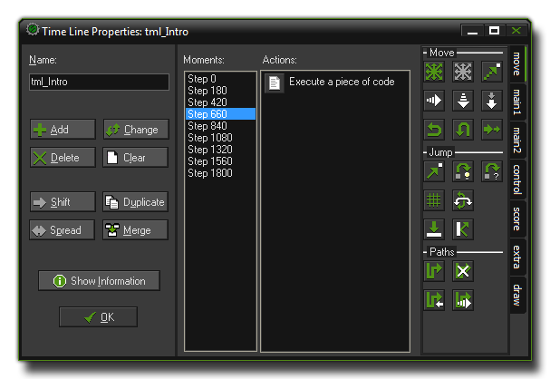

Timelines
Timelines offer you a way to create and control instances and actions over a set time period.
In most games you will want certain things to happen at certain moments in time. Now, you can try to achieve this by using the alarm events but when things get too complicated this won't work any more,
especially as you are limited to only twelve alarms. that's why we have the time line resource.
In a time line you specify which actions must happen at certain moments in game time, and you can use all the actions that are also available for an object in its different events. Once you create a time line you
can then assign it to an object, and the instance of that object will then execute the actions at the indicated moments of time when placed or created within a room. Let us explain this with an example :
Assume you want to make a guard and that this guard should move 20 time steps to the left, then 10 upwards, then 20 to the right, then 10 downwards and then finally stop. To achieve this you can make a
time line where you start with setting a motion to the left. You would then create moment 20 (a "moment" is just another way of saying "step") and set a motion upward, then at moment 30 a motion to the right,
at moment 50 a motion downwards and finally at moment 60 you would stop the motion. Once that is done, you can assign this time line to the guard and the guard will do exactly what you planned. You could
even set an alarm in the time line so that it is repeated after a certain length of time and in this way your guard can patrol an area!
You can also use a time line to control your game more globally. Create an invisible controller object, create a time line that at certain moments creates enemies, and then assign it to the controller object. Once
you start to work with it you will find out it is a very powerful tool indeed!
NOTE : If you are using the Free version of GameMaker:Studio you are limited to a maximum of 5 timelines per game. For more details see
here.
Creating A Timeline
To create a time line, choose Create Time Line from the Resources menu, or right click on the time line resource in the resource tree and select Create Time Line or you can just click on the create a time line icon found on the resource toolbar at the top of the main screen. Whatever method you choose will open the following window :

It's very similar to the object properties window as you can specify a name for your time line (like all resources, this should be specific and unique), and with an action list and actions on the right, and there is even
a Show Information button that can be used to get an overview of all actions within the time line. However, on the left, instead of an event list we have a moment list. In a time line a moment is
the same as a step, so ten moments on your time line are the same as ten steps in your game, and you can insert any number of actions and/or code into one moment and the object that has the time line assigned
to it will carry out these actions at the required time. Note that the time line can be started at any time in-game, so moment 0 is just the moment in which the time line starts and not the moment the game
or room starts.
The following buttons are available in this window to enable you to add, remove and change moments within the time line resource that you have created :
- Add. Use this to add a moment to the time line. You must indicate the moment, which is the number of steps since the time line was started. Now you can drag actions to the list as for object events. if you are adding in code actions then these can also be named, as explained in the section on Scripts - Adding Comments and Naming Code Blocks.
- Change. Use this button to change the time steps for the currently selected moment.
- Delete. Use this button to delete a moment or a range of moments. You must indicate the time step of the first moment to delete and the last one. All moments in between will be deleted.
- Clear. Use this button to clear the entire list of moments.
- Shift. Use this button to shift a range of moment to a new moment. You must indicate the start of the range, the end of the range, and the new time step to which the start of the range must be shifted. When different moments become the same their action lists will be merged.
- Duplicate. This is almost the same as the shift button but in this case a copy of the moments are made.
- Spread. Use this button to spread out a range of moments by adding time between them or put them closer together by removing time between them. You specify the start and the end of the range and the percentage for the spread. A percentage of 100 means nothing changes. For values smaller than 100 the moments are moved closer together and for values larger than 100 they are moved further apart. For example if you have moments at timesteps 5, 8, and 12 and you indicate as range 5:12 and a percentage 200, the moments will move to time steps 5, 11, and 19 (the intervals between them have doubled.) When different moments become the same their action lists will be merged.
- Merge. Use this button to merge a number of moments into a single one. You specify the start and the end of the range and they will all be merged into the start moment.
Please note, that although it is possible to create negative time moments, it is pointless to do so as they will never be executed!